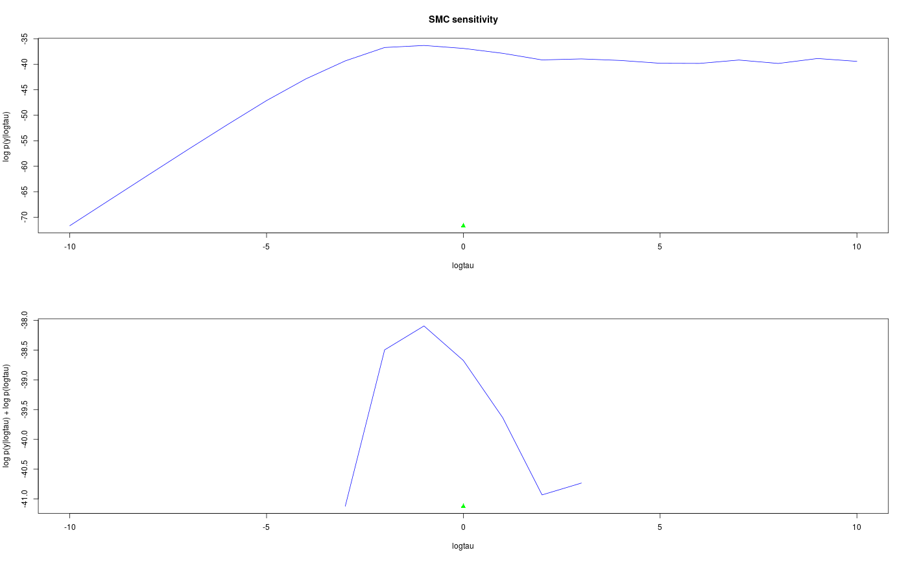

R/sensitivity.r
Sensitivity analysis of parameters with SMC
biips_smc_sensitivity(object, param_values, n_part, ...)
| object |
|
|---|---|
| param_values | named list of numeric values. Each member is named after a parameter for which we want to study sensitivity. Each member value is a vector or array whose last dimension is equal to the number of values for which we want to study sensitivity. |
| n_part | integer. Number of particles. |
| ... | Additional arguments to be passed to the SMC
algorithm such as |
biips_smc_sensitivity returns a list with the following
members:
vector of log marginal likelihood estimates at the different values of the parameters.
vector of penalized log marginal likelihood estimates at the different values of the parameters.
parameters value with maximum log_marg_like.
maximum log_marg_like value.
parameters value with maximum log_marg_like_pen.
maximum log_marg_like_pen value.
biips_model, biips_smc_samples
modelfile <- system.file('extdata', 'hmm.bug', package = 'rbiips') stopifnot(nchar(modelfile) > 0) cat(readLines(modelfile), sep = '\n')#> var c_true[tmax], x_true[tmax], c[tmax], x[tmax], y[tmax] #> #> data #> { #> x_true[1] ~ dnorm(0, 1/5) #> y[1] ~ dnorm(x_true[1], exp(logtau_true)) #> for (t in 2:tmax) #> { #> c_true[t] ~ dcat(p) #> x_true[t] ~ dnorm(0.5*x_true[t-1]+25*x_true[t-1]/(1+x_true[t-1]^2)+8*cos(1.2*(t-1)), ifelse(c_true[t]==1, 1/10, 1/100)) #> y[t] ~ dnorm(x_true[t]/4, exp(logtau_true)) #> } #> } #> #> model #> { #> logtau ~ dunif(-3, 3) #> x[1] ~ dnorm(0, 1/5) #> y[1] ~ dnorm(x[1], exp(logtau)) #> for (t in 2:tmax) #> { #> c[t] ~ dcat(p) #> x[t] ~ dnorm(0.5*x[t-1]+25*x[t-1]/(1+x[t-1]^2)+8*cos(1.2*(t-1)), ifelse(c[t]==1, 1/10, 1/100)) #> y[t] ~ dnorm(x[t]/4, exp(logtau)) #> } #> }data <- list(tmax = 10, p = c(.5, .5), logtau_true = log(1), logtau = log(1)) model <- biips_model(modelfile, data)#> * Parsing model in: /home/adrien/Dropbox/workspace/rbiips/inst/extdata/hmm.bug #> * Compiling data graph #> Declaring variables #> Resolving undeclared variables #> Allocating nodes #> Graph size: 169 #> Sampling data #> Reading data back into data table #> * Compiling model graph #> Declaring variables #> Resolving undeclared variables #> Allocating nodes #> Graph size: 180n_part <- 50 logtau_val <- -10:10 out_sens <- biips_smc_sensitivity(model, list(logtau = logtau_val), n_part)#> * Analyzing sensitivity with 50 particles #> |--------------------------------------------------| 100% #> |**************************************************| 21 iterations in 0.05 spar(mfrow = c(2, 1)) plot(logtau_val, out_sens$log_marg_like, type = 'l', col = 'blue', xlab = 'logtau', ylab = 'log p(y|logtau) ', main = 'SMC sensitivity') points(data$logtau, min(out_sens$log_marg_like), pch = 17, col = 'green') plot(logtau_val, out_sens$log_marg_like_pen, type = 'l', col = 'blue', xlab = 'logtau', ylab = 'log p(y|logtau) + log p(logtau)')plml <- out_sens$log_marg_like_pen ymin <- min(plml[is.finite(plml)]) points(data$logtau, ymin, pch = 17, col = 'green')